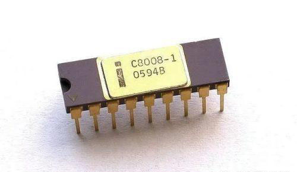
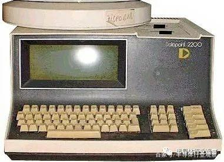

Intel 8008：一个被抛弃的芯片开拓了一个王朝
早期的微处理器跨越了两个主要的计算时代。第一个时代是从 1960 年代后期到 1970 年代，当时的计算机系统工程师使用 TTL 部件、双极 PROM、stone knives,和bearskins实现了小型计算机处理器架构和处理器板。包括 Digital Equipment Corp (DEC)、Data General(DG)、Prime、Computer Automation、IBM、Burroughs、HP、Four-Phase、NCR 和Univac在内的每个小型计算机制造商都有自己的专有小型计算机架构、ISA 和专用外围设备。那是狂野的时代。
在与第一个时代部分重叠的第二个时代，一些计算机制造商和一些半导体供应商开始设计 LSI 芯片，将越来越大的处理器块集成到一个 IC 上，第一个在商业上成功的单芯片微处理器也是第二个时代的早期产物。那就是 4 位的英特尔 4004，它刚刚在2021 年 11 月 15日庆祝了它的 50岁生日。4004 微处理器的到来引起了热烈的反响，但英特尔同时开发了第二个微处理器。那个微处理器是 8 位 Intel 8008。这两个处理器的故事在很多方面交织在一起，但在其他方面它们是独立的。
与 Intel 4004 微处理器一样，外部客户推动了 Intel 8008 微处理器的开发。对于英特尔 4004 微处理器，外部客户是日本计算器公司 Busicom，该公司希望英特尔 4004 用于构建高端台式计算器。英特尔为 Busicom 设计和制造了 4004 和三个配套芯片，然后通过谈判将 Intel 4004 微处理器销售给其他公司，以换取 Busicom 在零件上的价格让步。英特尔于 1971 年 11 月 15 日向世界推出了4004 微处理器。
4位 Intel 4004 微处理器是 4 芯片组的一部分，包括微处理器、ROM、RAM 和用于 I/O 扩展的移位寄存器。这个被称为 Intel MCS-4 的 4 芯片组代表了一个有围墙的花园。微处理器独特的多路复用 4 位总线构成了花园墙。如果另一个芯片想要与 Intel 4004 微处理器通信，它必须实现与多路复用总线接口所需的控制和定时逻辑。
当时，英特尔的主要业务是销售内存，特别是 RAM 和 ROM。这些存储器都有并行的地址和数据总线。没有一个与 Intel 4004 的独特总线直接兼容。这不是英特尔 8008 微处理器的愿景，它的开发考虑了更简单的系统总线。8008 设计为使用标准 RAM 和ROM，英特尔也在制造。
英特尔 8008 的外部客户是位于德克萨斯州圣安东尼奥的计算机终端公司 (CTC)。CTC 对 Intel 8008 微处理器的架构和 ISA 做出了巨大贡献。微处理器的定义基于 CTC 现有的 8 位板级处理器计划，该处理器内置约 100 个 SSI 和 MSI TTL 芯片。利用他们在 4004 开发方面的经验，英特尔的 Ted Hoff 和 Stan Mazor 审查并调整了 CTC 计划中的处理器架构，以对其进行轻微改进，以简化其作为单芯片的制造，并允许英特尔将微处理器塞进一个很小的 18 -引脚 DIP。架构调整涉及对ISA 的更改。
CTC 制造了哑终端（dumb terminals），英特尔为该应用提供了一个定制的 512 位循环移位寄存器。CTC 想进军日益增长的小型机终端业务，并正在开发 8 位嵌入式处理器板作为其计划制造的智能终端的基础。作为该开发的一部分，CTC 的技术总监 Victor Poor 研究了英特尔的 64 位（不是 Kbit 或 Mbit）双极 SRAM，作为实现 CTC 处理器寄存器的一种可能方式。他询问英特尔是否可以通过在 RAM 设计中添加计数器来制作定制版本的 SRAM，使其能够用作下推堆栈寄存器。
英特尔的 Stan Mazor 曾参与英特尔 4004 的早期定义，他与Poor 讨论了要求，对 CTC 处理器架构有了更深入的了解，然后为定制芯片写了三个提案。Mazor 的第一个提议是根据Poor 的初始请求，设置一个带有堆栈计数器的8 位寄存器。第二个提议的芯片是一个寄存器堆栈，带有一个附加的算术单元（在概念上类似于四相 AL1）。第三个建议是在一个芯片上集成一个完整的 8 位 CTC CPU。那个引起了Poor 的注意。
Mazor在创建此提案时甚至没有详细描述 CTC处理器架构或其 ISA，但Poor 对第三个提案非常感兴趣，将处理器的编程手册发送给 Mazor，其中描述了组装时的架构-语言水平。Mazor 和 Ted Hoff刚从Intel 4004 项目中解脱出来（离开 Federico Faggin 去开发和研究硅栅工艺和逻辑实现细节），他们深入研究了 CTC 处理器的编程手册，并为单芯片版本的CTC八位 CPU 处理器创建了一个更详细的建议。英特尔的 CTC 销售人员随后介入，CTC 于 1970 年 3 月 18 日以每件 30 美元的价格购买了100,000 个零件的 300 万美元单芯片处理器采购订单。
新聘用的 Hal Feeney 成为 8 位处理器项目的芯片设计师。Mazor 和 Feeney 以英特尔提供给 CTC 的提案开始了他们的开发。然而，该项目很快就中断了，因为有人质疑 CTC 是否真的致力于开发这种定制芯片。（英特尔 4004 的开发也出现了类似的停顿，但故障完全在于英特尔。）随着 8 位微处理器项目的停滞，Feeney开始帮助 FedericoFaggin 完成 4004 微处理器和 MCS 的开发-4 芯片组。
英特尔发送给 CTC 的详细微处理器提案有一些非常有趣的地方。该提案意外地包含了一个设计流程，该流程会阻止微处理器正确处理中断。正如最初定义的那样，中断机制会导致微处理器调用中断服务程序，而无需先将返回地址放入处理器的堆栈中，因此中断服务程序无法从中断中返回。这个缺陷使提议的中断机制毫无用处。
大约在这个时候，德州仪器 (TI) 也开始根据 CTC 的规范并应 CTC 的要求开发用于 CTC 的单芯片处理器。TI 的处理器将被称为 TMX 1795。虽然 TI 最初为 CTC 的处理器提出了3 芯片组，但在英特尔向 CTC 提出自己的建议后的某个时间，它转为单芯片设计。TI 将 TMX 1795 构建在一个非常大的芯片上，这在批量生产时并不经济。
TI制造了 TMX 1795，但未能成功将其出售给 CTC，并且从未成功销售该设备。相反，TI 成功地销售了大量的 TTL、计算器和其他芯片。TMX 1795 微处理器在加利福尼亚州山景城的计算机历史博物馆的故事和一些文物中幸存下来，包括 1996 年该设备的运行视频。
同时，8008 微处理器的 6 个月项目中断实际上帮助英特尔调试和改进设计。首先，它为反思和完善 8 位处理器的架构提供了时间。最初的 CTC 指令集包括一个按位分支指令。英特尔设计团队确定不需要该指令并将其删除以简化处理器的硬件设计。同时，英特尔设计团队确定处理器将从增量和减量指令中受益匪浅，因此他们将这两条指令添加到 8008 的 ISA 中。中断还允许英特尔 8008 设计团队捕捉并修复有缺陷的中断机制。
此外，中断为英特尔突破性的 1103 1Kbit DRAM 投入生产提供了时间。出于许多原因，这是一个重大事件，但8008 项目的直接好处是容纳第一个大容量 DRAM 的 18针 DIP。因为这个封装现在已经被 Intel 的生产团队正式批准了，Intel 8008 设计团队可以用它来为 Intel 8008 增加两个宝贵的管脚。以前，8008 设计团队被限制在 16 个管脚，因为那是封装英特尔的生产组已经在手了。
根据 Feeney 的说法，这两个额外的引脚是改进 8 位处理器所急需的。好处之一是：其中一个额外的引脚用于将额外的状态信息带出微处理器，这有助于实现微处理器的堆栈并允许中断机制正常工作。

通过精心设计和 Faggin 对半导体工艺和设计方法的改进（其中一些是他为英特尔的 MCS-4 项目开发的），尽管 8008 需要多出 50% 的晶体管，但 Feeney 的 8008 微处理器芯片仅比英特尔 4004 微处理器芯片稍大一点（3500 个晶体管，而 4004 为 2200 个）。因此，Feeney的设计非常可制造。不幸的是，采用硅栅 MOS 实现的Intel 8008 微处理器的运行速度明显低于 CTC 设计和实现的位串行 TTL 版本的处理器。它还需要大量的支持芯片来创建一个完整的系统，尽管不如 CTC 处理器板上的 100 个芯片多。
CTC在 1971 年末评估了 Intel 8008 微处理器，并说：“不用了，谢谢。” 太少了，太晚了。该公司已经开发出第一款带有位串行 TTL 处理器的 Datapoint 2200 终端，并且正在为下一代终端开发更快的并行实施方案。CTC销售 Datapoint 2200 机器直到 1979 年，并在此过程中多次升级 TTL 处理器板的设计。每次修订后，TTL 处理器变得更快。

Datapoint2200 终端不仅仅是一个终端。它是一台小型计算机，您可以使用 BASIC 或 PL/B 进行编程，并配备一个或两个数字盒式磁带驱动器、一个配套的 2.5Mbyte 硬盘驱动器，后来还配备了一个可选的软盘驱动器。一些历史学家称它为第一台个人计算机，它显然被设计成一台计算机，但它不是基于微处理器的。它只是产生了一个。CTC的Datapoint 2200智能电脑/终端卖得很好，公司后来更名为Datapoint。
与此同时，由于失去了主要客户，英特尔现在拥有了 8008 微处理器的版权，并决定将其商业化销售。尽管许多在线文章和参考资料都使用1972 年 4 月作为 Intel 8008 的推出日期，但该公司在 1972 年 3 月 13 日发布了微处理器，距发布 Intel 4004 仅四个月。一些在线引文说那是 1974 年，显然令人困惑英特尔 8008 和 8080 微处理器。然而，由于 Ken Shirriff 的广泛研究，英特尔 8008 的正式亮相似乎是一篇 1 页的文章，由 Stephen William Fields 撰写，标题为“单芯片提供的 8 位并行处理器”，该文章发表于 3 月 13 日, 1972 年的电子杂志。
英特尔现在销售的不是一个，而是两个单芯片微处理器：4004 和 8008。他们在这个新市场上具有明显的领先优势。
Intel8008 微处理器有一个 16Kbyte 的地址空间（使用 14 位寻址，当时被认为是巨大的，比 4004 微处理器大四倍）和一个两相 800KHz 时钟（用于最快的速度等级）。根据数据表，一个 8008 指令获取/执行周期至少需要五个处理器状态，或 10 个时钟。这是每秒 80,000 条指令的峰值指令执行率。
如果以今天的微处理器标准衡量，甚至以过去 30 年的标准衡量，英特尔的 8008 确实是微弱而缓慢的。但它是第一个商用的 8 位单芯片微处理器，您可以用它构建有用的系统。系统设计人员开始将 Intel8008 集成到包括嵌入式系统在内的许多新产品中，例如惠普传奇且寿命长的 2640 系列智能 CRT 终端的前两个版本，以及一些早期的微型计算机。此外，8008 微处理器的推出帮助英特尔销售了更多的主要产品，即 DRAM 和 EPROM，通过支持甚至鼓励需要半导体存储器的系统设计。
英特尔 8080 和 8085、8 位 Zilog Z80 以及英特尔和其他处理器供应商在过去半个世纪中开发的所有 x86 微处理器都带有原始英特尔 8008 的一些爬行动物 DNA。如果你不相信，看看密切在这些微处理器的寄存器组。
后来，Federico Faggin 于 1974 年离开英特尔并创立了 Zilog。他将一些 8008 微处理器 DNA 放入极为成功的 8 位 Z80 微处理器中，该微处理器于 1975 年发布。但那是另一故事了。